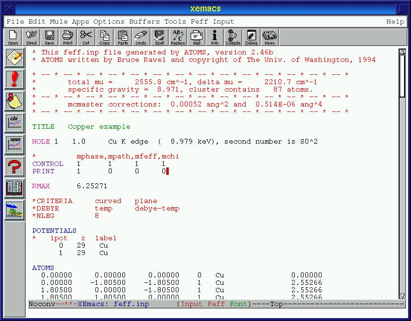
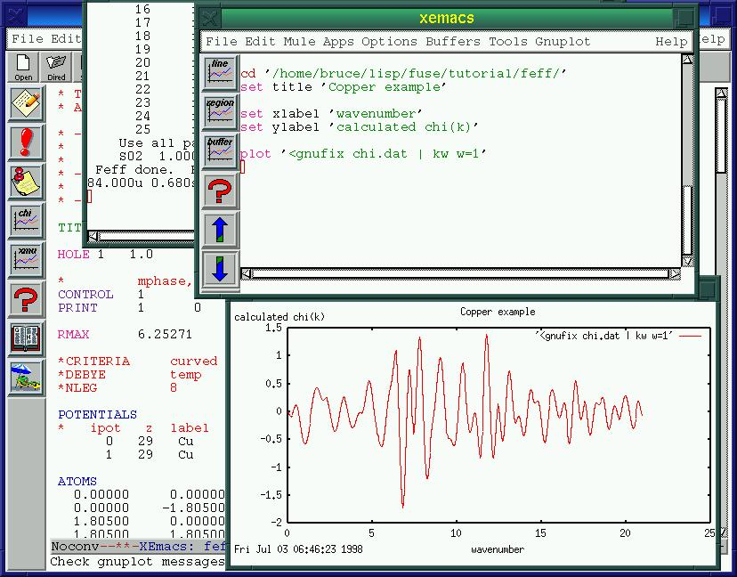

@fuse{} has a quick way of jumping to the FEFF input file generated
by an ATOMS run. Type C-c C-f l, select Open
feff.inp from the Atoms menu, or click mouse-1 on the
third icon from the top of the toolbar. The `feff.inp' file will be
displayed in place of the `atoms.inp' file. Notice that the mode
line and the menu bar have both changed to reflect the fact that you are
now editing a feff input file.
For the sake of this tutorial, you will need to alter `feff.inp' in
only one way. Change the value of the `PRINT' keyword to `1 0
0 0'. This is done to be sure that the `misc.dat' file is written
to disk by FEFF. Of course FEFF has many more options for
altering its behavior, but exploring them is beyond the scope of this
tutorial. We will now run FEFF. This is done is exactly the same
way as we ran ATOMS. In fact, the manner in which a program can be
run is independent of which program will be run. The key sequence
C-c C-r r always runs the appropriate program for the current
file. There is always an option in the program specific menu labeled
`Run program, this file'. Also the Input menu has an option
labeled `Run this program, this file' which also works. Finally,
there is always a red exclamation point toolbar icon in XEmacs.
Figure 4: The first few lines of the FEFF input file for copper
@ifnotinfo 
Notice that the run-time messages from FEFF are appearing in the run-time buffer after those from ATOMS. During your analysis session, this buffer serves as a log of your work. When you are finished with analysis and exit Emacs, the contents of this buffer(2) will be automatically saved in a file called `~/.fuse-run.log'.
Running FEFF takes a few minutes, so this is a good time to stretch your legs.
If you do a directory listing on the `feff' subdirectory, you will see that FEFF has written out many files. @fuse{} has several tools for examining the output of your `feff' run. In the `Feff' menu is a sub-menu labeled `Look at output files'. In that sub-menu you can choose to examine any of `misc.dat', `paths.dat', `files.dat', or `list.dat'. The key sequences for these are C-c C-f followed by m, p, f, or s respectively. Choosing any of these will cause that file to be visited and displayed in a read-only buffer. @fuse{} assumes that files jumped-to in this manner are are log files and thus should not be casually altered. That is why they are placed in read-only buffers. If you want to edit one of these jumped-to files, type M-x toggle-read-only.
Because these files are all rather cryptic, @fuse{} comes with a handy perl script called INTRP. INTRP reads `feff.inp', `paths.dat', and `files.dat' and writes a summary of all of the scattering paths from the FEFF calculation. INTRP can be run from the `Look at output files' submenu or by hitting C-c C-f i. The INTRP buffer is very useful for setting up a FEFFIT input file.
@fuse{} will display FEFF results graphically by constructing
scripts for the GNUPLOT program then sending those scripts to
GNUPLOT. These scripts are generated automatically, usually using
information contained ni the input file itself. We can examine the
total @greek{chi,k} from the FEFF calculation by selecting
`Plot chi' from the `Feff' menu, typing C-c C-p c, or
clicking on the graph icon labeled chi. When you do this, a new
frame will appear on the screen containing the GNUPLOT script. The
buffer containing the script will be in a major mode specifically
designed for GNUPLOT scripts (see section Plotting with Gnuplot). After
a short time, a window displaying the GNUPLOT plot will appear.
This is shown in Figure 5.
Notice that, in the plot, @greek{chi,k} is weighted by k. Examinnig the script, you see that the `chi.dat' file was filtered through two scripts. GNUFIX is a SED script which comments out the header material in `chi.dat' so that it will plot properly in GNUPLOT. KW is an AWK script that actually applies the k-weighting. Both of these scripts are found in the `scripts/' subdirectory of the @fuse{} distribution and are available for your use outside of @fuse{}.
@ifnotinfo
Figure 5: Plotting the calculation

You can change the k-weighting easily by selecting `Set k-weight' from the `Input' menu or typing C-c C-d k. You will asked for a k-weight value in the minibuffer. Answer with 2 or any other number then replot chi with the new k-weight.
The other plotting option in FEFF mode is to plot
@greek{mu,E} together with the background function. This can only be
done is the XANES keyword is set in the input file and a version
of FEFF is used that calculates XANES. This was not done in this
tutorial, but feel free to play with this later.
Go to the first, previous, next, last section, table of contents.